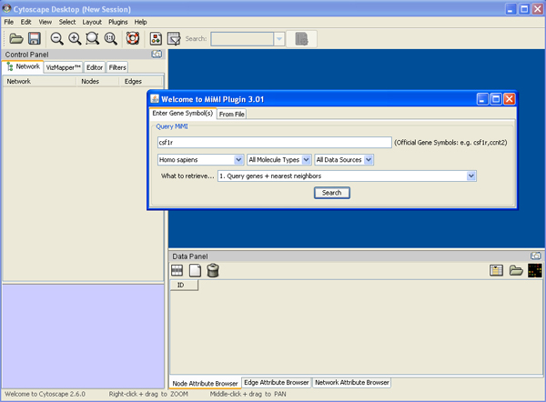
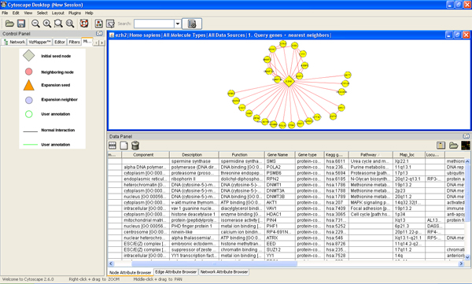
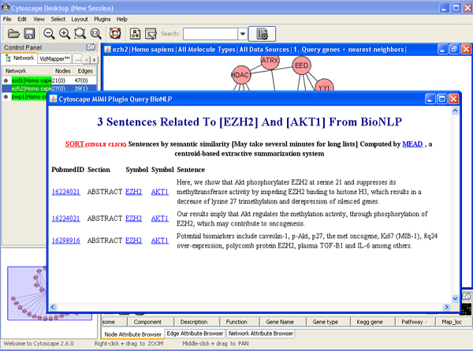
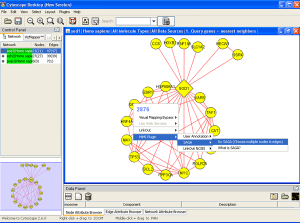
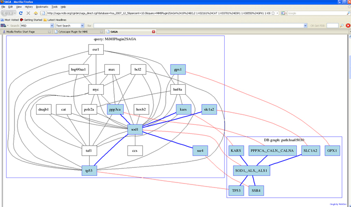
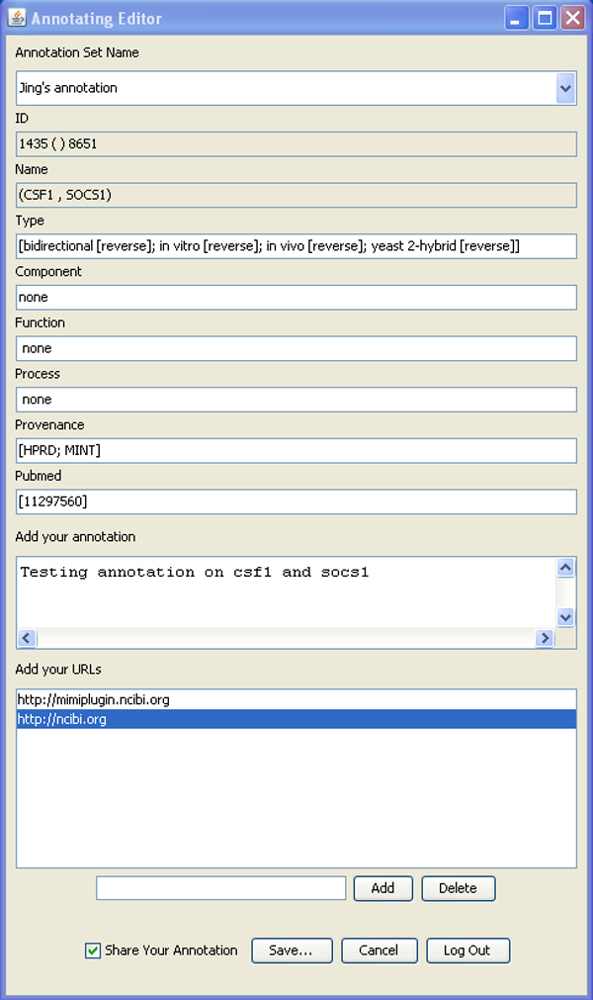
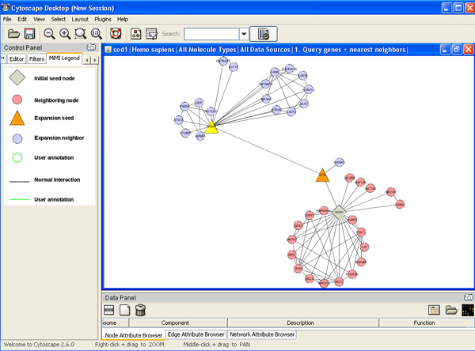
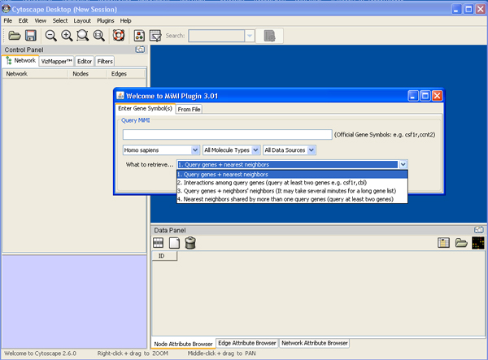

Tutorial
- Install Cytoscape and MiMI Plugin
- Loading a network
- Getting literature information for selected edge and sort the result
- Finding pathway matches for chosen network
- Adding your own node/edge annotation
- Expanding a network
- Finding paths among given genes
Install Cytoscape and MiMI Plugin
Click here to get instructions.
Loading a Network
- Assuming that you already installed Cytoscape and MiMI Plugin. If you need to install Cytoscape, click here.
- Prepare a list of genes, see, for example mygene.txt .
- Load mygene.txt file.
a) Starting up Cytoscape->plugins->MiMI->MiMI Plugin->From File tab-> Drop down box ->specify species, molecule type etc
b) Load Gene File->your gene file name

- Browse node/edge attributes with Cytoscape Node Attribute Browser and Edge Attribute Browser.
a) Click Node Attribute Browser on Cytoscape panel (bottom right)->click icon ->check attributes name->choose nodes to see attributes.
b) Click Edge Attribute Browser to get edge information

- Double clicking node/edge will direct you to MiMI webpage for that node/edge.
Getting literature information for selected edge (interaction) and sort the result
- Assuming that you already loaded a network. If you need to load a network, click here.
- Right click an edge->get literature info from BioNLP

- Sort the result. Click “sort” to sort the result with MEAD
Finding pathway matches for chosen network
- Assuming that you already loaded a network. If you need to load a network, click here.
- Select nodes and edges->right click node->SAGA->apply SAGA to chosen network->specify database and matching percentage->query


Adding your own node/edge annotation
- Assuming that you already loaded a network. If you need to load a network, click here.
- Right click a node/edge->annotation->log in->change annotation set name->edit attributes from MiMI, add comments and URLs->save->log out

Expanding a network
- There is interaction level drop-down list on the dialog box. It has three levels from 1 to 3 that mean users can choose different number of steps of expansion to find neighbors. Choose higher level to expand network.

Finding paths among given genes
- If you only interested in interactions among given genes, you can do this by following “Loading a network” and you need to check the box of “Search Paths Between Genes”.
